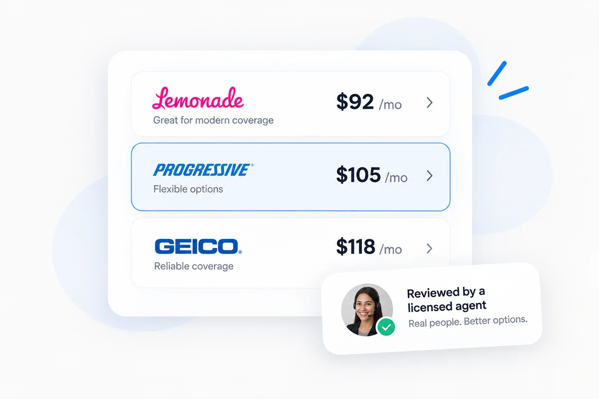
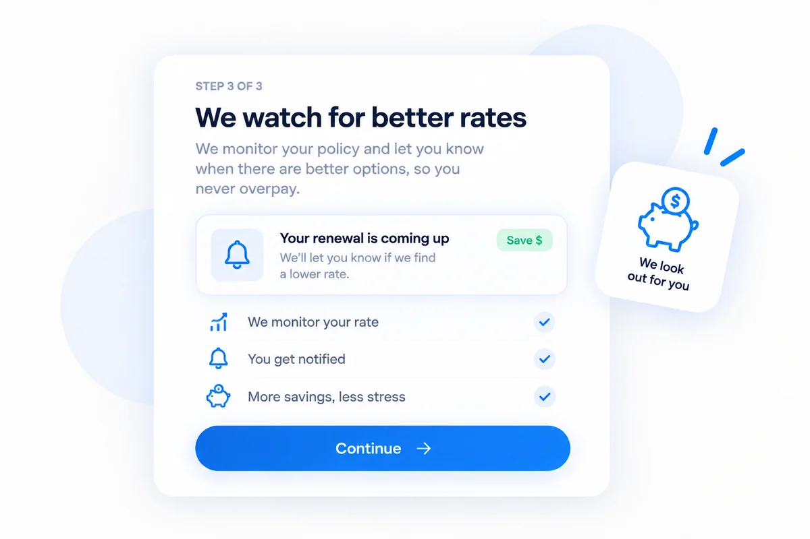

More than just an online quote
Simple online. Personal where it matters. Start your quote online, have a licensed agent review your options, and count on us to keep an eye on your policy. If a better option comes up, we’ll be here to help you take a look.
Get your quote online
Start with a simple online form. No long back-and-forth, no complicated process — just a faster, easier way to start shopping for coverage.
A real person reviews your options
Not just a quote — a quote checked by a person. Our technology helps gather and compare options, then a licensed Safe House agent reviews your rates, coverage, and details to help you find the right fit.

Illustration only — the figures shown are not real quotes.
We watch for better rates
We keep an eye on your policy, let you know when better options come up, and help you stay on top of renewals — with real support in English or Spanish.

We lay the options out. You pick.
Every quote comes back with more than one way to cover the same car. An agent walks you through what each one actually changes — then it is your call, not a default a website chose for you.
What is included
- Bodily injury liability
- Property damage liability
- Uninsured motorist, if you keep it
- SR-22 filing, if you need one
Availability and wording vary by company and by state. Your agent confirms what each one costs and what it actually says before anything is bought.
Start my quote →What is included
- Everything in liability only
- Collision
- Comprehensive
- The deductibles you choose on each
Availability and wording vary by company and by state. Your agent confirms what each one costs and what it actually says before anything is bought.
Start my quote →What is included
- Everything in full coverage
- Higher uninsured-motorist limits
- Rental reimbursement
- Roadside assistance
- Medical payments or PIP
Availability and wording vary by company and by state. Your agent confirms what each one costs and what it actually says before anything is bought.
Start my quote →Compare between companies
You are not stuck buying everything from one insurer. We can put your car with one company and your home with another — whichever pair actually comes out better for you.
What a car policy is actually made of
In plain words, so you can tell whether two quotes are actually the same policy at different prices or two different policies.
Pays for the other people — their injuries and their property — when a crash is your fault. Required in both states, and the part that is never enough at the legal minimum.
The two that pay for your own car. Collision when you hit something, comprehensive for hail, theft, fire, glass and animals. Each has its own deductible.
Pays when the driver who hit you cannot. Both Texas and New Mexico require carriers to offer it, and declining it has to be in writing — which tells you what they think of the odds.
For you and whoever is in your car, whoever caused it, with no deductible. A vehicle carries one or the other, not both.
Priced per car, not per policy. Worth having on the car you cannot be without for a week, and worth skipping on the one you can.
Not coverage — a form the carrier files with the state to prove you are insured. We do these regularly and often the same day.
Every discount, checked by a person
An online form asks about a handful of these. An agent asks about all of them, at every company we shop, and again when the policy comes up for renewal.
16asked about on every car quote
Start my quote →Continuous coverage before this policy. One of the largest credits on a car policy, and an online form asks about it once and moves on.
A home, renters or mobile-home policy sitting with the same company as the car.
More than one vehicle on the same policy. Worth checking even when the second car barely moves.
Owning the home you live in. At several companies this applies even when the home policy is somewhere else.
Paying the six or twelve months up front instead of in instalments.
Letting the carrier draft the premium so it is never late.
Taking policy documents and bills by email instead of in the post.
A state-approved course. Worth asking about again at renewal, not just when the policy is written.
A B average or better for a student listed on the policy.
A student on the policy living far enough away that they are not driving the car.
A clean record across whatever period the carrier looks back over — and they do not all look back the same distance.
Letting the carrier see how the car is actually driven, by app or plug-in device. Not right for everyone, and an agent will say so.
A factory or aftermarket alarm, immobiliser or tracker.
Anti-lock brakes, airbags, backup camera, lane assist and the rest of what the car already has.
Quoting before the current policy expires rather than on the day it does.
Teachers, nurses, military, first responders, and a long list of employers, unions and alumni associations.
Not every company offers every discount, and eligibility varies by carrier and by state.
A human reads every quote. That is the whole product. The form is the fast part; the part worth paying an agency for is somebody who has placed this a thousand times looking at what came back before you buy it.
Shop smarter, with the answers first
Plain answers to what people actually ask before they buy. No sales pitch and no invented numbers — written by the agents who place this business every day.
The drivers other agencies turn away
A hard record is not a reason to be sent somewhere else. It is a reason to be shopped properly, because the carrier that says no to one person says yes to another.
What people ask us
No. Quoting is free and there is no obligation. If nothing we find beats what you have, we will tell you that — it is a shorter conversation and it keeps you as somebody who calls us next year.
Often the same day. Tell the agent up front that you need one, because it changes which carriers are worth quoting and getting that right the first time is the difference between an afternoon and a week.
Sometimes, depending on the situation and the state. It is a real question with a real answer — call and ask rather than assuming the answer is no.
Say so. A lapse changes the price and it changes which companies will write you, and hiding it only means being requoted later at a number that moved.
Send us your declarations page and we will quote the same coverage, line for line, so you are comparing like with like instead of a cheaper policy that covers less.
Yes — we are licensed in both states. New Mexico quotes are prepared by an agent rather than by the online rater, so you get real New Mexico limits instead of a Texas price.
Let us take a second look.
Start online and an agent picks it up, or call and we will do the whole thing with you. In English or Spanish, whichever the conversation starts in.